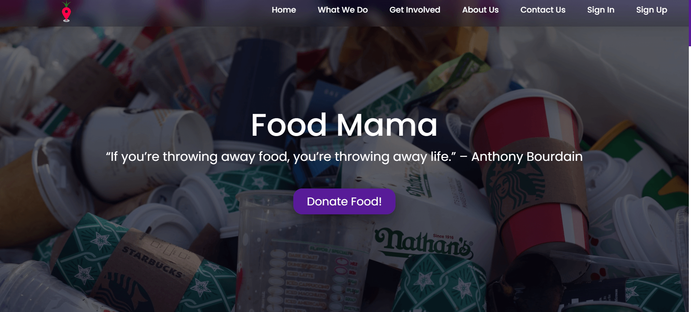
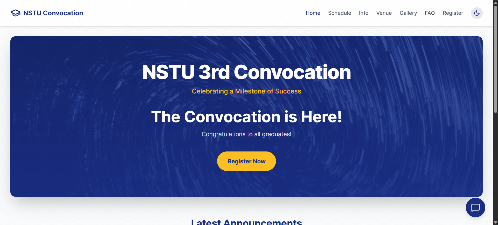

SkillsProgramming Languages, Tools & Platforms
Linguistic Proficiency
Training
Projects

Food MamaA food waste management website built with HTML, CSS, and JavaScript. I developed it as part of my ISLM 5102 course project. Visit Live Site

NSTU ConvocationI built this website as a fun project for my university’s convocation. I used my coding experience and also applied Vibe Coding Visit Live SiteNSTU ConvocationI built this website as a fun project for my university’s convocation. I used my coding experience and also applied Vibe Coding Visit Live SiteExtra-Curricular Activities
|